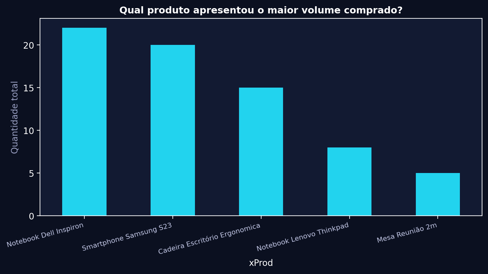
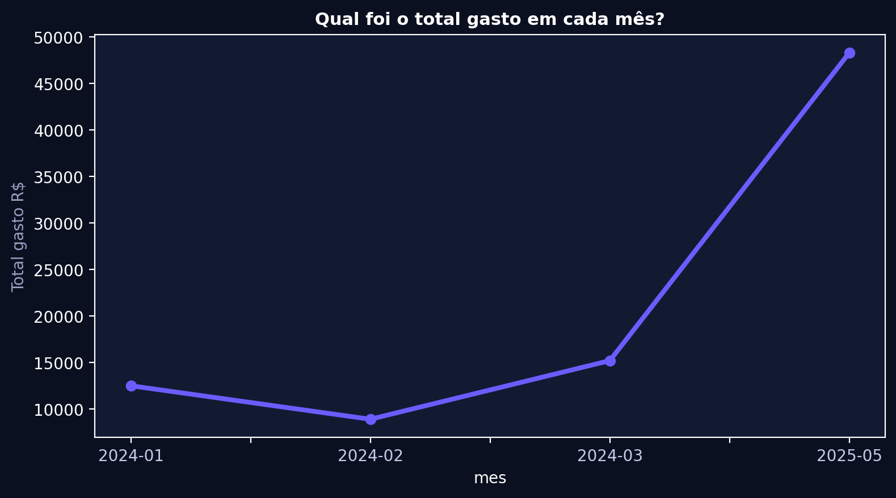
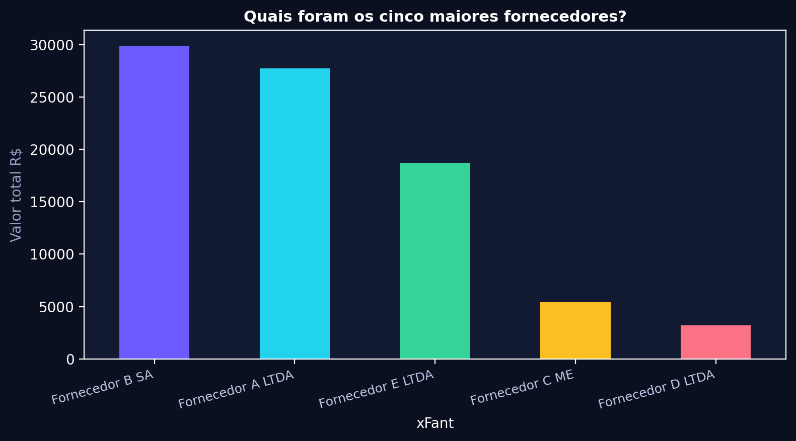
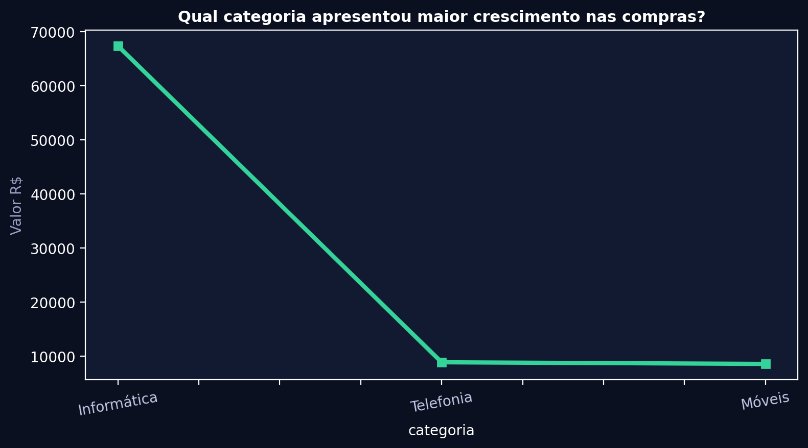
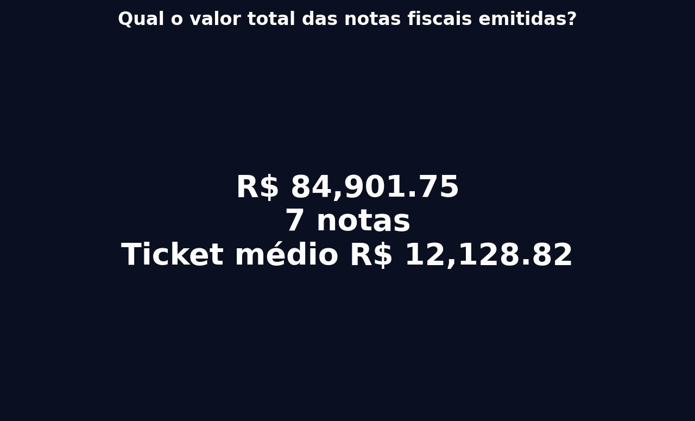
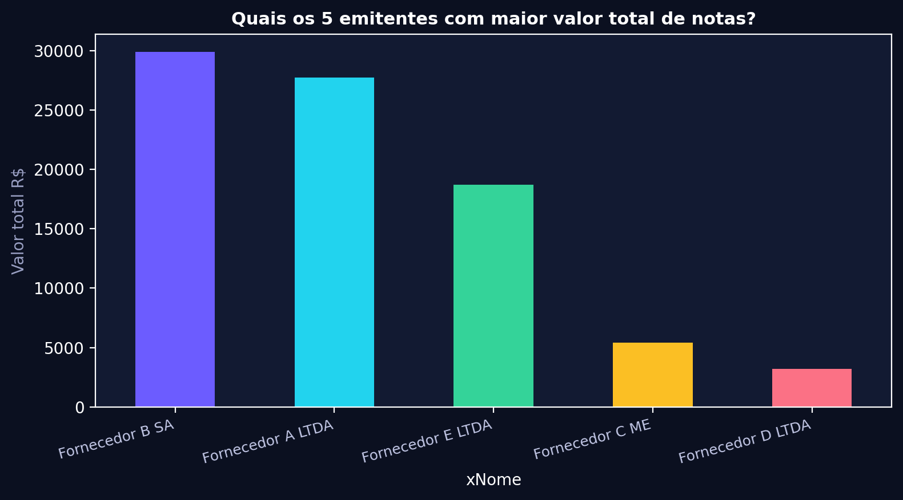
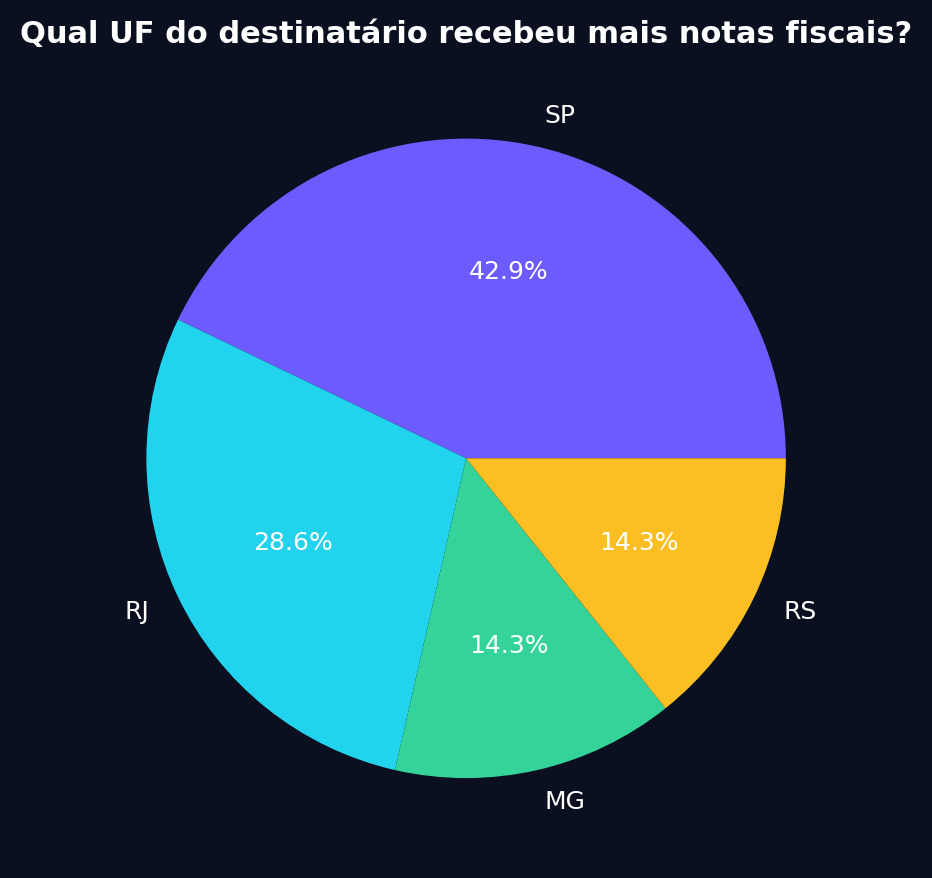
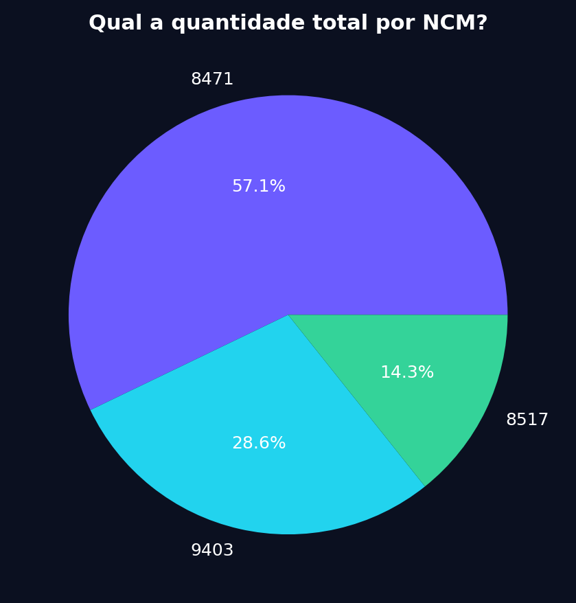
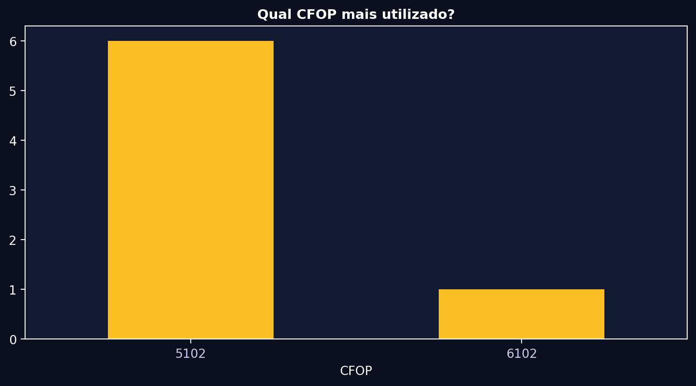
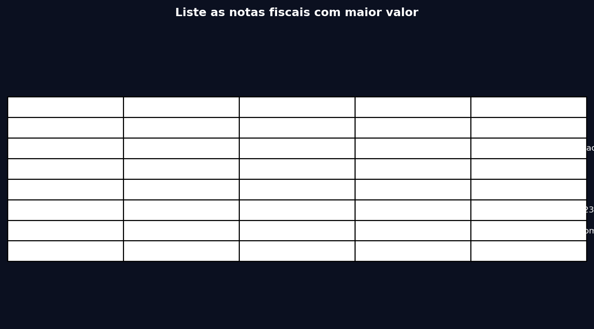

📸 Evidências - 11 Perguntas
Base: 7 notas, Total R$ 84,901.75
1. Qual fornecedor recebeu o maior valor no período?
Intent ranking viz bar
2. Qual produto apresentou o maior volume comprado?
Intent ranking viz bar

3. Qual foi o total gasto em cada mês?
Intent timeseries viz line

4. Quais foram os cinco maiores fornecedores?
Intent ranking viz bar

5. Qual categoria apresentou maior crescimento nas compras?
Intent growth viz line

6. Qual o valor total das notas fiscais emitidas?
Intent aggregate viz text

7. Quais os 5 emitentes com maior valor total de notas?
Intent ranking viz bar

8. Qual UF do destinatário recebeu mais notas fiscais?
Intent group_count viz pie

9. Qual a quantidade total por NCM?
Intent group_count viz pie

10. Qual CFOP mais utilizado?
Intent ranking viz bar

11. Liste as notas fiscais com maior valor
Intent list viz table
